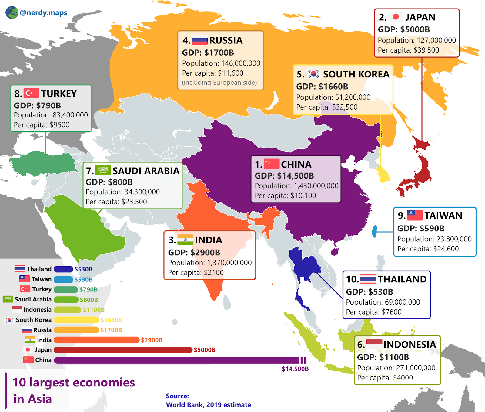

Crecimiento económico en AsiaAnalizando el auge de las economías asiáticas y su impacto global |
||
SeccionesOtras Noticias
Acceso |
El auge de las economías asiáticas: El impacto en el mercado globalAsia ha experimentado un crecimiento económico sin precedentes en las últimas décadas. El continente, que alberga a más de la mitad de la población mundial, ha visto un desarrollo robusto en países como China, India, Japón y Corea del Sur, entre otros. Este crecimiento ha sido impulsado por diversos factores, como las reformas económicas, la inversión en infraestructura, la tecnología y un mayor acceso a los mercados internacionales. El ascenso económico de Asia ha transformado el panorama global, posicionándose como el motor principal de la economía mundial. En particular, China ha emergido como una potencia económica que rivaliza con las grandes economías occidentales, mientras que India continúa con su crecimiento acelerado, convirtiéndose en uno de los mercados más dinámicos del mundo. Sectores clave del crecimiento asiáticoEl crecimiento en Asia se ha producido principalmente en sectores como la manufactura, la tecnología, la infraestructura y la exportación de productos. Países como China han logrado transformar su modelo económico, pasando de una economía agrícola a una de manufactura avanzada, mientras que India se ha convertido en un hub global de servicios tecnológicos y outsourcing. Desafíos para las economías asiáticasA pesar de su impresionante crecimiento, las economías asiáticas también enfrentan varios desafíos. El aumento de las desigualdades económicas dentro de los países, el envejecimiento de la población en algunas naciones como Japón, y la dependencia de las exportaciones están entre los problemas más importantes que deben abordarse. Además, la creciente urbanización en Asia plantea desafíos adicionales en términos de infraestructura y sostenibilidad ambiental. El impacto global del crecimiento asiáticoEl impacto del crecimiento económico de Asia no solo se limita al continente. A medida que Asia se convierte en un centro global de producción y consumo, tiene un impacto directo en los mercados internacionales. Las economías de países como Estados Unidos, Europa y América Latina están cada vez más interconectadas con los flujos de comercio e inversión que provienen de Asia. La creciente clase me |
|